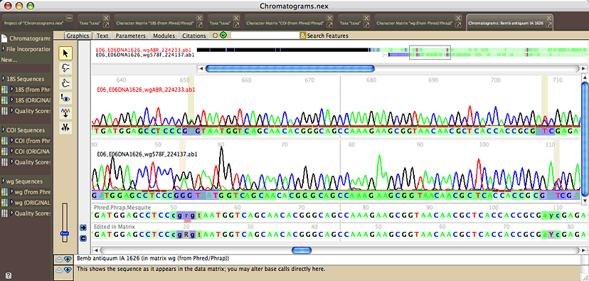

In this tutorial, you will go from chromatograms to having fully processed sequences, with final base calls.
Setup
First, make sure that you the Chromaseq package installed, and that you have installed Phred and Phrap.
Download the ChromaseqExamples archive, and unzip it. You will have a folder containing four things:
- a folder containing some example chromatograms
- a file called "PrimerList" containing the names of primers
- a file called "SampleCodes" showing the correspondence between sample codes and sample names
- a file called "PrimerSequences" containing primer sequences.
You will also need to modify the phredpar.dat file that come with Phred, so that it can accommodate the chromatograms provided in the example. Open up the phredpar.dat file in a simple text editor, and
"BeckmanCEQ" terminator big-dye Beckman_CEQ_2000
and immediately below this add the following two lines:
#Entry below added to accommodate Chromaseq example files
"DT3730POP7{BDv3}.mob" terminator big-dye ABI_373_377
From the File>Open Other submenu in Mesquite, choose "Phred/Phrap Import from Local Chromatograms". You will see a dialog box that looks something like this:

Let's begin at the bottom, by telling Mesquite the locations of Phred, Phrap, and various other files.
Press on the "Phred Phrap Locations & Options..." button, and the dialog will appear that will let you tell Mesquite where the programs are located, and where the Phred parameter file is:

Press the "Browse..." button beside the "Phred, Phrap, & Phd2Fasta" to browse for the folder on your hard disk containing the three programs Chromaseq uses (Phred, Phrap, and Phd2Fasta), all of which must be in the same directory. Do the same for the Phred parameter file ("phredpar.dat"). You should only have to do this once on your computer, unless you move these files to other locations.
Once that is done, then you will need to tell Chromaseq three more things to set up the system:
- How to find, in the file names of the chromatograms, the sample codes and primer names. To do this for your own sequences, you would need to create a naming rule. However, for these sample chromatogram files, the default naming rule will work.
- Where the file is that lists the sample codes and the names of the samples. Use the "Browse" button beside the Code & Names File area and choose the file "SampleCodes" from the download.
- Where the file is that lists the names of the primers, whether they are forward or reverse primers, and the name of gene or genomic piece to which the belong. Use the "Browse" button beside the "Primer list file" area and choose the file "PrimerList" from the download.
When you use this system to process your own sequences, you would need to provide your own naming rule, sample code file, and primer list. But, once these are set up, you will in general not need to re-enter these.
Asking Phred and Phrap to make base calls and assemble contigs
With the set-up completed, you can now use the File>Open Other>Phred/Phrap Import from Local Chromatograms dialog box to ask Phred and Phrap to process your files. Press the "OK" button, and Chromaseq will ask you which directory contains the chromatograms. Choose the "Chromatograms" folder from the download.
At this point, your computer's terminal shell should start. On a Mac, this will typically be the Terminal application; on Windows, it will be the Cygwin shell if that is what you installed. Phred and Phrap will then start processing the files, and the shell will be filled with the output of these programs. If you switch back to Mesquite, you will notice in the log information about what is happening. Eventually, the processing will finish, and Mesquite will import the resulting contigs into a Mesquite project, with one matrix for each gene.
In the example in this tutorial, the chromatograms come from three different genes, and so three matrices will appear in the project once the processing is done, one for 18S rDNA, one for COI, and the other for the gene wingless (called "wg" in the PrimerList file). The last matrix processed will be presented to you, by default in Birds Eye View, and with the bases colored according to the quality score assigned to them by Phred and Phrap. White is high quality, darker greens are moderate quality, and blue is poor quality:

The pink sequence means the contig was not successfully assembled.
Examining a contig and its chromatograms
To see the contig for the wg sequence of Bemb antiquum IA 1626 and its chromatograms,
touch the view chromatograms tool ( )
on "Bemb antiquum IA 1626". A new window will open, showing you the chromatograms
and the contig:
)
on "Bemb antiquum IA 1626". A new window will open, showing you the chromatograms
and the contig:

You may see a different part of the sequence than is shown in the above image; Chromaseq centers the view on the base upon which you clicked in the matrix.